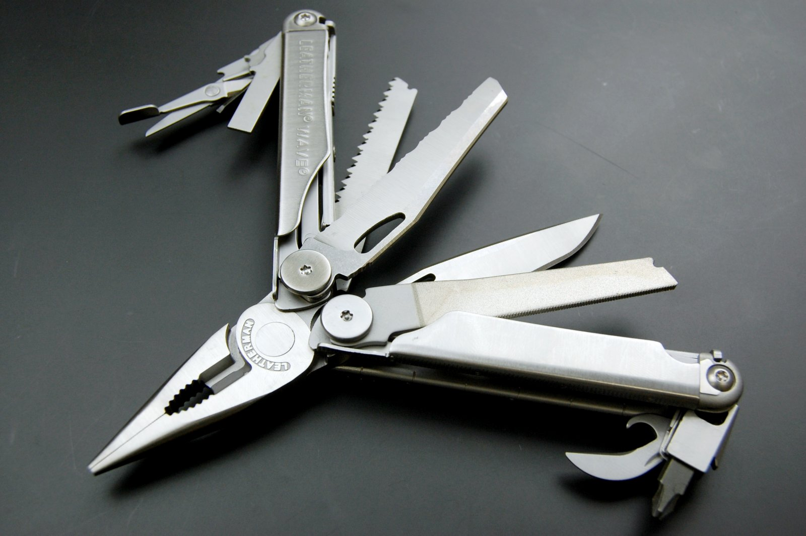
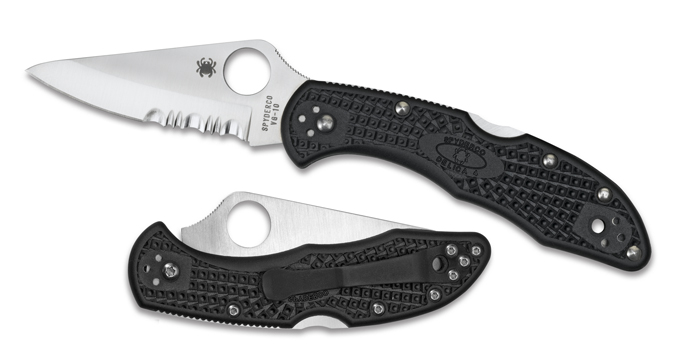
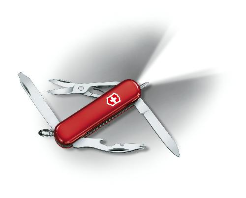

Leatherman Wave Multi-tool - has come in quite handy at times.
Return to Main Page

Spiderco pocket knife - I love this little knife! I prefer the 60/40 split between the straight edge and the serrated edge on the knife blade for the sake of additional durability and utility.
Return to Main Page

Victorinox Swiss Army Knives. My preference is the Victorinox brand over Wenger, but I do think the Wenger is a quality product as well. I carry this particular knife with me on my keyring. It has a ball-point pen, a small red flash light, and a cross-head screw driver which easily fits the screws that hold computer cases in tact. It will also fit the mounting hardward for many computer components - quite handy when harvesting parts out of older equipment.
Return to Main Page